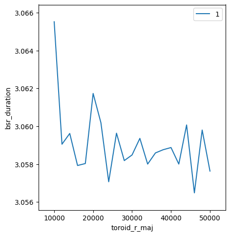

Run Sirepo/Shadow simulations with Bluesky¶
This section is based on the basic example.
Hint: See the List of predefined simulations in Sirepo for examples of identifiers for different beamlines.
Run “Beamline” Shadow simulations¶
In this example, we run a single Shadow simulation and collect the resulting averaged intensity and corresponding 2D intensity distribution from the “Watchpoint” report on the “Beamline” page of Sirepo/Shadow app.
Start ipython and run the following where sim_id is the UID for the simulation we are working with:
[1]:
%run -i ../../../examples/prepare_det_env.py
from sirepo_bluesky.shadow_detector import SirepoShadowDetector
shadow_det = SirepoShadowDetector(
name="shadow_det",
sim_id="00000001",
sim_report_type="default_report",
sirepo_server="http://localhost:8000",
root_dir="/tmp/sirepo-bluesky-data",
)
shadow_det.select_optic("Aperture")
shadow_det.create_parameter("horizontalSize")
shadow_det.create_parameter("verticalSize")
shadow_det.read_attrs = ["image", "mean"]
shadow_det.configuration_attrs = ["horizontal_extent", "vertical_extent", "shape"]
shadow_det.active_parameters["Aperture_horizontalSize"].set(1.0)
shadow_det.active_parameters["Aperture_verticalSize"].set(1.0)
shadow_det.duration.kind = "hinted"
uid, = RE(bp.count([shadow_det]))
Transient Scan ID: 1 Time: 2022-04-25 16:47:59
Persistent Unique Scan ID: '4c5a728f-4c93-40e7-bcf2-6c70388f400c'
New stream: 'primary'
+-----------+------------+-----------------+---------------------+
| seq_num | time | shadow_det_mean | shadow_det_duration |
+-----------+------------+-----------------+---------------------+
| 1 | 16:48:04.7 | 9.752 | 5.137 |
+-----------+------------+-----------------+---------------------+
generator count ['4c5a728f'] (scan num: 1)
We can access the data as the last item in the database (db[-1]) or directly via the returned uid, which when plotted as an image will look like:
[2]:
hdr = db[uid]
imgs = np.array(list(hdr.data(f'{shadow_det.name}_image')))
[3]:
cfg = hdr.config_data(shadow_det.name)["primary"][0]
hor_ext = cfg[f"{shadow_det.name}_horizontal_extent"]
vert_ext = cfg[f"{shadow_det.name}_vertical_extent"]
plt.imshow(imgs[0], aspect="equal", extent=(*hor_ext, *vert_ext))
[3]:
<matplotlib.image.AxesImage at 0x7fad84a554f0>
